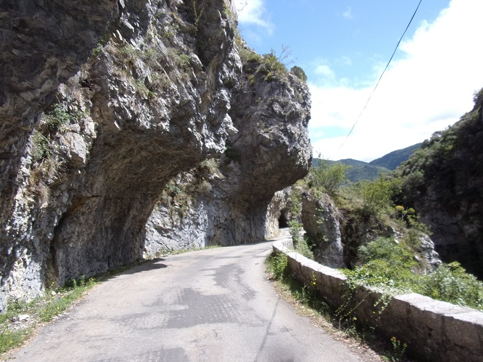
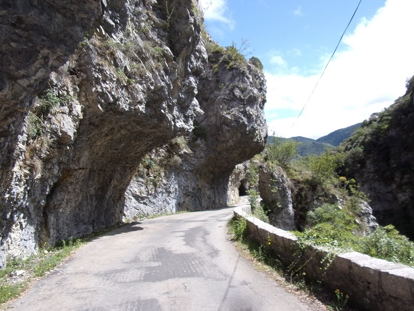
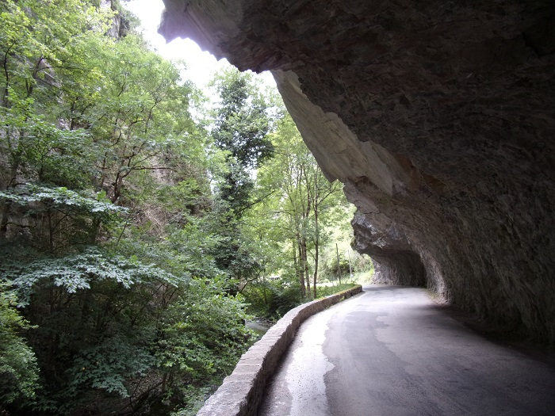
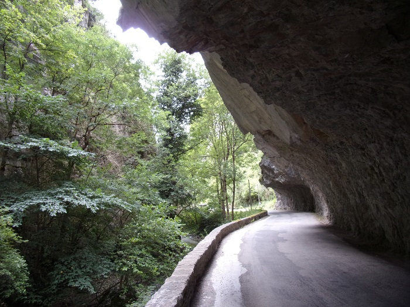
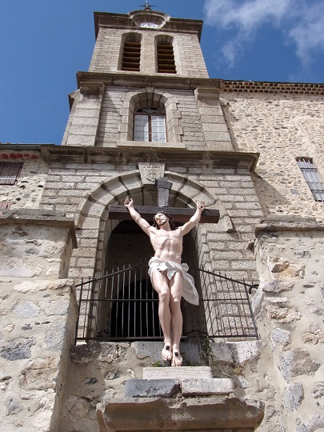
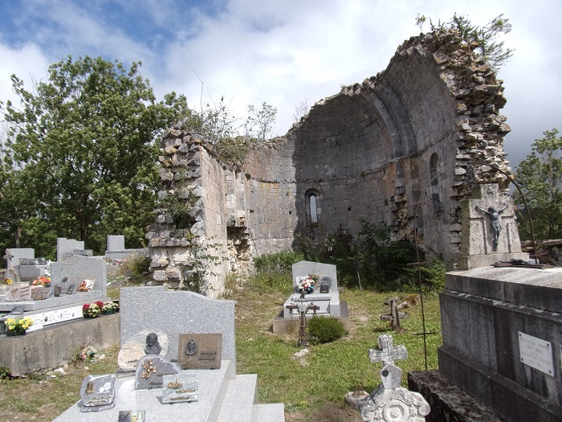

Le défilé de Joucou est une gorges étroite de 500 m environ dans laquelle un passage a été creusé en 1867 sur la rive gauche pour élargir la route précédente qui passait rive droite. Ce choix a permis de réaliser un exploit technologique par le percement de 3 tunnels et autres, sans toucher au pont romain qui se trouve en amont des gorges et permettait initialement de traverser le Rébenty avant cette difficulté. Je n'ai pour l'instant pas fait la randonnée Joucou / pont romain pour voir par moi-même la nécessité de forcer ce passage par la roche, mais sur le plan en tout cas les 2 choix ne me semblent pas guère différents en kilomètre, peut-être en dénivelé ?

Entrée des gorges

Petite usine Hydroélectrique, la prise d'eau est à la sortie des gorges

Vers le premier des 3 tunnels


Premier tunnel

Plaque commémorative sur le premier tunnel, "Ce chemin a été construit en 1867 sous l'administration de M. MAGNIEN Préfet de l'Aude et sous la direction de MM. MALRIC agent-voyer en chef de l'Aude, Louis FAGES agent-voyer de l'arrondissement de Limoux et VAQUIER agent-voyer conducteur. CAISSAC entrepreneur

Vers le deuxième tunnel

Avant le deuxième tunnel, falaise trouée par ce tunnel

Les deuxième et troisième tunnels
Le troisième tunnel

Plaque commémorative du nettoyage du défilé par le club spéléo de l'Aude en 2002,
placée entre les 2 et 3ème tunnel

falaise du troisième tunnel
Troisième tunnel


Après le troisième tunnel

"Pont romain" vu de dessus à la sortie du défilé, passage de la route avant le percement du défilé

Passage interdit sur le "Pont romain", un des côtés s'étant écroulé

Plan des chemins de randonnées de l'autre côté du pont romain

les ruines du chateau d'Able, surveillant le pont depuis le haut de la rive gauche


Vue du troisième tunnel depuis la rive droite du Rébenty

Pont romain vue du Rébenty


Barrage sur le Rébenty pour prise d'eau pour l'usine en entrée des gorges

Au delà du barrage sur le Rébenty


Entrée des gorges
 


Route avant le premier tunnel

premier et deuxième tunnels
sortie du deuxième tunnel

vers le troisième tunnel
500 mètres en amont, un petit défilé d'environ 200 mètres a, à nouveau, nécessité de creuser la roche pour pouvoir faire passer la route menant vers Belfort sur Rébenty. Ce défilé a pris le nom du château vu plus haut, bien que depuis le château il ne me semble pas qu'on puisse apercevoir ce dit défilé...

 



Ce pic rocheux de 888 mètres avec cet étrange aplomb convexe est en bord de Rébenty. il est le point de repère séparant les communes de Niort-de-Sault, Mazuby et Espezel. Les 2 photos qui suivent ont été malheureusement prises de trop près et donc ne font pas idéalement ressortir la particularité étonnante de ce pic.

Sur les cartes postales anciennes ce rocher est appelé le "Rocher de Louis XIV"

Carte postale de la collection de Thierry Meynier
De l'usine hydroélectriques en aval du défilé jusqu'à Niort-de-Sault
Ce défilé entre La Fajolle et Mérial peut être considéré comme le début des gorges du rébenty

Sur les cartes postales anciennes de Labouche & Frères ce défilé est appelé gorges d'Abdoutchis (prononciation en occitan proche de Adouxès)

Carte postale de la collection de Thierry Meynier
Ce paragraphe est un peu hors sujet, mais les photos prises lors de balade le long des gorges sont positionnées ici en attendant une éventuelle page plus explicite
Les villages de l'amont du Rébenty vers l'aval


La Fajolle, dernier village sur la route du col du Pradel qui sépare le département de l'Aude de l'Ariège, a plusieurs particularités qui en font un village charmant


Sur le petit plateau de Sault (rive droite du Rébenty)
 
Village de Joucou

Abbaye de Joucou


Voir la page sur le sentier Cathare

Remarquer les strates rocheuses fines, qui ont la même déclivité que la pente de la montagne sur la rive gauche
Voir Ex-propriation pour tracer la route de Puilaurens à Lafajole - acte du 31 juillet 1838
29 juillet 1838 p 4 - Délibération sur le classement du chemin de grande communication partant des limites de L'Aude dans la commune de Puilaurens jusqu'aux limites du même département dans la commune de Lafajolle [Vide]
30 juillet 1838 p 5, 6 , 7 et 8 - Délibération du conseil municipal de la commune de Niort, sur la convenance et l'utilité de classer au rang de chemins vicinaux de grande communication celui partant des limites de l'Aude dans la commune de Puilaurens aux limites du même département dans la commune de Lafajolle, avec embranchement de Belfort à Belcaire passant par Espezel et Roquefeuil
Le conseil municipal de la commune de Niort, au canton de Belcaire, réuni en session extraordinairedans le lieu ordinaire de ses séances, en vertu de la lettre de Monsieur le Sous-Préfet de l'arrondissement de Limoux du 23 de ce mois,
Présents Messieurs Teulière Joseph Martin [n'est pas de ma famille...], Bes Antoine Capouny, Chaurreau Marcel, Lacroix Eustache, Delpey Jean-Marie, Bounes Jean Paul, Bes Raphaël, Soubrevie Magloire, Segui Guillaume, Rocher Jean-François, Delpey Jean (adjoint) et Fondi-de Niort Antoine-Louis-Alphonse (maire)
Monsieur le maire a donné lecture au conseil de la dite lettre de Mr le Sous-Préfet, par laquelle le magistrat l'invite à délibérer et émettre son avis sur :
Sur ce, le conseil prenant en sérieuse considération la lettre de Monsieur le Sous-Préfet, après y avoir murement réfléchi
Considérant que les habitants de la vallée de Rébenty et des communes qui la bordent à sa droite, sont absolument dénuée de toute ligne de communication praticable, soit vers le centre du département de l'Aude, soit vers les Pyrénées Orientales, soit vers le haut Ariège ; lieux avec lesquels ils doivent nécessairement correspondre journellement, tant pour l'écoulement de leurs produits, que pour leur approvisionnements;
Que le projet dont s'agit offre des communications faciles et sures dans ces 3 directions, et que leur défaut est une des causes les plus fécondes de misère dans ce canton, en arrétant ou contrariant tout mouvement d'industrie et de commerce
Cosidérant que la profondeur et l'abri qu'offre la vallée de Rébenty relativement au pays qui l'entoure permettront aux voyageurs et aux transports de circuler dans toutes les saisons et sans danger sur toute la longueur de la vallée, soit pour aboutir à Quillan en descendant l'Aude par la route départementale n°17 [la route de la Pierre-lys], soit aux Pyrénées Orientales par Caudiès; et qu'aucun autre emplacement, pris à droite ou à gauche de la vallée du Rébenty ne peut présenter la même sécurité ; que bien au contraire, il n'est pas dans le canton, de commune qui n'ait à regretter quelqu'un de ses habitants perdus dans les neiges et les tourbillons de la plaine de Sault, qui tous les hivers devient fatale à un grand nombre de voyageur ; soit en leur causant la mort aussitôt, soit en leur faisant contracter des maladies qui les mènent le plus souvent au tombeau, ou ne leur laisse qu'une vie pénible tourmentée par les douleurs.
Considérants que que nonobstant tous ces malheurs qui n'arrivent le plus souvent que par surprise, en cours des jours où les voyageurs ont cru pouvoir s'aventurer sans danger ; la plaine de Sault reste impraticable pendant 8, 15 et même 30 jours suivis à plusieurs reprises durant les 6 mois d'hiver qui assiègent ce malheureux pays, soit qu'aucune puissance humaine puisse surmonter cet obstacle, et que par concéquent , sous le rapport de la sécurité , de la célérité, et de la non interruption des correspondances et des transports le projet qui nous occupe aura toujours sur les chemins placés ailleurs que dans la vallée de Rébenty, un avantage signalé, puisque l'expérience prouve que jamais et quelque temps qu'il fasse il n'y a ni impossibilité, ni même danger à suivre la vallée de Rébenty depuis l'Aude jusqu'aux confins de l'Ariège vers Lafajole.
Considérant sous le rapport de la direction que présente la vallée de Rébenty, qu'elle semble disposée exprés par la nature pour lier le pays de Sault au Roussillon et au Languedoc, puisque comme nous avons déjà dit, cette vallée se termine dans celle de l'Aude à une lieu et demi de Quillan, sur la route départementale n° 17, et que de ce point on parvient en peu de temps à Caudiès sur la route royale n°117, et cela pour une vallée d'une pente douceet facile qui ne semble être que la prolongation en ligne droite sur Caudiès de la vallée du Rébenty.
Considérant qu'il n'y a pas d'autre communication possible avec le Roussillon, que de suivre la dite vallée, ou bien d'aller passer par la plaine de Sault, la côte de Quillan et le col de St Louis, ce qui pour signaler de nouveau, les dangers réels que cette direction fait courir aux voyageurs, ni les côtes longues et pénibles ; ni les précipices qui les bordent, retardent les voyageurs pendant même la belle saison, de la valeur d'une journée de marche et augmente de beaucoup les frais de transports ;
Considérant au contraire, que la vallée de Rébenty conduit par une pente douce, en ligne directe vers le Roussilon, avec moins de temps, moins de frais, et sans péril
Considérant sous le rapport de sa centralité dans le pays de Sault ; qu'à la différence de la route n° 22 qui ne fera pour ainsi dire qu'effleurer le canton, le chemin de grande communication qui nous occupe, traversera ou passera très près de la plupart des communes du canton, et du reste de l'ancien pays de Sault ; qu'elle le sillonnera dans son vrai centre, et dans toute sa longueur ; et que de même que la rivière de Rébenty reçoit par de petites vallées toutes les eaux des campagnes voisines, comme étant le confluant général des ruisseaux de cette contrée, de même les embranchements qui existent pour la plupart tracées dans cette vallée, partant des villages circonvoisins et se dirigeant sur Rébenty feront du chemin placé sur ses bords, la seule voie généralement plus utile au pays ; la plus centrale ; la mieux accessible, la plus sure, la mieux abritée en un mot, la voie mère nourricière de tout le pays de Sault, et d'une partie du haut Ariège.
Considérant que le canton du Roussillon pour la consommation et l'approvisionnement du haut Ariège, une quantité prodigieuse de vin qu'on ne pas évaluer à moins de 5 à 6 mille charges, l'huile nécessaire à la consommation, du sel, du poisson salé, des denrées coloniales, en un mot la plupart des choses nécessaires à la vie, et de là, malgré les difficultés et la longueur du chemin actuel ; que le canton importe[sic...] à son tour dans le département, ses fers, ses bestiaux, ses bois, ses légumes, son avoine, ses oeufs, ses viandes salées ; et qu'il est par conséquent de la plus haute importance pour ses habitants, d'avoir sur ces contrées un chemin toujours praticable, et aussi divers(?) que facile.
Considérant sous le rapport industriel, minéralogique et forestier, que les marbres les plus précieux, même le blanc hatriaire(?), abondent dans la vallée du Rébenty au dire des minéralogistes qui l'ont visité, (Gensanne, Devinège) qu'ils y ont trouvé plusieurs mines de fer, et de cuivre ; des traces de mines d'argent, de mercure, et d'autres métaux ; que les eaux du Rébenty alimentent des chutes en descision(?) propres à leur exploitation ;
Qu'on y trouve encore d'excellentes carrières d'ardoise dont le département est dépourvu ; et que le chemin projeté passerait aussi sur celles plus riches encore d'Ascou.
Considérant que la vallée de Rébenty, sans parler du reste du canton, possède environ 3000 hectare de magnifiques futaies de sapin, appartenant à l'Etat, et dont les produits par le manque total de chemin ne se vendent qu'nviron le tiers de leur valeur actuelle ; à tel point qu'un arbre dont l'Etat retire dans la plaine de Sault de 60 à 80 francs, ne se vend avec les mêmes dimensions qu'au prix de 20 à 30 francs dans la vallée de Rébenty ; et que des arbres semblables pris dans la forêt de Bélesta voisine d'une grande route se vendent de 100 à 125 francs.
Considérant que toutes ces richesses minéralogiques, industrielles et forestières renfermées dans la vallée du Rébenty, ne peuvent être avantageusement exploitées sans l'ouverture d'un chemin charretier, et qu'il importe à l'Etat et aux départements voisins, autant qu'à ce canton que les richesses que cette vallée renferme soient enfin exploitées.
Considérant que tous les avantages ci-dessus énoncés, et bien d'autres encore, feront du chemin qui nous occupe, à la fois le complément et le supplément de la route départementale n°22 dansla plaine de Sault, ayant chacune d'ailleurs sa spécificité (la première en liant le canton vers l'orient, avec le Roussillon, Port Vendre et la mer ; vers l'occident avec le haut Ariège et l'Espagne par Ax et la route royale n° 20 - la seconde, avec Quillan, le canal du Midi et le bas Ariège) et que le pays ne peut que désirer l'établissement prochain de ces 2 importantes lignes de communication.
Considérant quant à la direction à donner au chemin projeté qu'elle est indiquée par celle de la vallée de Rébenty et par celle qui fait suite directement au Rébenty, à travers la commune de Puilaurens jusqu'à Caudiès vers l'orient ; et qu'à l'occident, l'expérience de tous les hivers a démontré que le col dit del Pradel limite de l'Ariège avec l'Aude dans la direction de Lafajolle est plus abrité, moins étendu, et par conséquent mieux accessible que le Port de Marmare qui sert de passage de la plaine de Sault avec le bas Ariège ; qu'en preuve de ce qui précède, le conseil pour affirmer qu'il ne se passe pas de semaine de l'hiver, que les habitants de Lafajolle, ne franchissent le col du Pradel pour aller à Ax faire des provisions tandis qu'on ne franchirait pas impunément à pareil jour le col de Marmare, ni la plaine de Sault, ce que les habitants du canton d'Ax connaissent parfaitement, puisqu'ils prennent de préférence la direction du Pradel à celle de Marmare quand ils viennent dans le pays de Sault ;
que d'ailleurs le col du Pradel, se trouvant sur la ligne qui joint la vallée de Rébenty à celle d'Ascou, Sorgeat et Ax, et par conséquent beaucoup plus direct pour communiquer avec cette ville, d'où le canton retire une infinité de provision, et dont il fréquente les foires renommées par l'affluance de meilleures races de bestiaux du pays de Sault et de l'Ariège ; qu'enfin sous le rapport des eaux thermales et des ressources hygiéniques, les habitants de la vallée du Rébenty et de sa rive droite; ceux d'une grande partie du Roussillon, du Roquefortes et des Corbières n'ont pas de voie plus sure ni plus courte que celle qui nous occupe en passant par le Pradel pour se rendre aux eaux d'Ax.
Considérant que depuis 1756, époque à laquelle les Etats du Languedoc votèrent un impôt spécial pour l'entretien des routes existantes et pour la création de nouvelles, le pays de Sault a contrivué à l'établissement des routes et monuments qui embellissent notre province, sans que rien encore ait été fait pour améliorer le sort des populations de ce canton ;